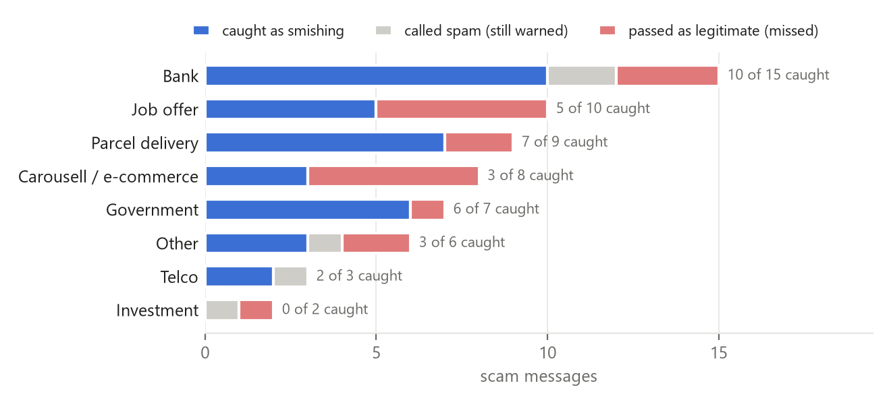

Smishing Triage is a forward-it-to-check scam detector for a Singapore bank's customers. A customer forwards a suspicious text, or a screenshot of one, and within seconds gets a verdict (scam, marketing spam, or no scam signals) along with the words that triggered it. This section makes the case for funding a pilot.
The problem, in money. Scams cost people in Singapore S$913.1 million across 37,308 cases in 2025, about S$24,500 per case [1], and S$410.6 million in the first half of 2026 alone [2]. Most scams start with a message: messaging platforms (53.5% WhatsApp, 37.9% Telegram) were the contact method in 9,355 cases in 2025, second only to social media (10,448). SMS itself was the contact method in only 450, after telco filtering and the protected gov.sg sender ID took effect [1]. The checker therefore accepts any forwarded text, not only SMS. Its training data is SMS, and the Singapore scam set used to test it (section 5) is mostly SMS and WhatsApp messages, with a few from Carousell chat and Telegram.
Where it fits. The government's ScamShield app filters suspicious SMS, and its WhatsApp bot checks forwarded messages against police reports and a classifier [4]. Smishing Triage is a complement, not a replacement. It is the bank's own layer: it runs in the bank's channel, separates marketing spam from scams, and shows the customer which words raised the flag. Every check also stays with the bank's fraud team, which sees new scam wording first.
Why it matters to the bank. Since 16 December 2024, the MAS–IMDA Shared Responsibility Framework has allocated phishing losses in order. The bank bears the loss if it breached one of its specified anti-phishing duties. The telco bears it, for scams sent by SMS, if the bank complied and the telco did not. Otherwise the customer bears it [3]. A voluntary checker does not discharge any of those duties, and it does not move liability. What it does is reduce how often customers are phished at all. That means fewer losses to dispute, less exposure wherever a control does fall short, and fewer customers who lose money with no one else liable. A customer who sees why a message was flagged also learns to spot the next one unaided.
Why three classes, not two. A standard spam filter puts a marketing blast and a credential-harvesting message in the same class. For the customer, one wastes three seconds and the other can empty an account. Separating them turns an inbox tidier into a fraud control, so success is measured by how many scams are caught (smishing recall), not by accuracy. On messages that are 83% legitimate, a model that calls everything legitimate scores 83% accuracy and catches nothing.
What the prototype delivers today, and what it does not. On held-out test data it catches 76% of scam messages, and every test scam it misses is sent to a person by the review rule (section 9). It runs on a laptop; a small server costs a few hundred dollars a year. It is not ready for customers. On 60 real local scams it catches 60% and warns on 68%, and all 5 genuine bank and SingPost notices were flagged. Both gaps have one cause in the public training data: its scams are British and Indian, mostly premium-rate prize texts, and its legitimate messages are personal chat (partly Singaporean) with almost no transactional SMS.
The pilot. Three months, with the money going mostly to local data. Costs are estimates.
| Phase | Work | Estimated cost |
|---|---|---|
| Months 1–2: local data | Label about 3,000 local messages from the bank's fraud reports, customer forwards and its own genuine transactional SMS (OTPs, alerts), each checked twice: about 100 analyst-hours | about S$5,000 (at S$50 per hour) |
| Month 3: retrain and trial | Retrain with this pipeline (minutes), test on a fresh held-out local set, then a staff-only trial in the bank's channel | server a few hundred S$ a year |
| Throughout: staff time | An engineer to connect predict() to the bank's channel and run the trial (about 60 hours), and the fraud team reviewing the trial's verdicts (about 20 hours) | about S$4,000 (80 hours at S$50 per hour) |
| Throughout: scam-type labels | From a paid-tier or self-hosted LLM: customer messages cannot go to a free tier that may train on them | usage-based; small at pilot volumes |
| Total | about S$9,000, plus server and LLM usage | |
Go/no-go criteria, measured on a fresh local test set never used in training:
The prototype fails these today, and one failure is a blocker by itself. It flagged all 5 genuine SingPost and bank notices in the Singapore set. A checker that calls a bank's own alerts scams teaches customers to ignore warnings, and the bank's own messages too. Until the bank's genuine messages pass the 1% criterion, the answer is no-go, whatever the scam catch rate.
An illustrative yearly benefit. Every input below is an assumption, stated so it can be replaced with the pilot's measurements:
| Assumption | Value |
|---|---|
| Messages customers forward to check, per year | 50,000 |
| Share that are scams (people forward what already looks suspicious) | 40% |
| Share of scams caught: today on local scams / at the pilot target | 60% / 80% |
| Share of caught scams that would otherwise have led to a loss | 1% |
| Average loss per scam case [1] | S$24,500 |
| Losses avoided per year: 50,000 × 40% × caught × 1% × S$24,500 | S$2.9m today / S$3.9m at target |
The figure scales in proportion to each input, and the least certain is the 1% that would have lost money. The S$24,500 average is also a mean, which a few very large losses pull up, so a typical case costs less. Even at a tenth of that, avoided losses (about S$290,000 a year today) are many times the pilot's cost. The pilot costs less than one average scam loss, so it breaks even if it prevents a single loss. Under the Shared Responsibility Framework most of these losses would fall on customers rather than the bank, so for the bank the benefit is mainly customer trust and fewer disputed claims. The pilot exists to measure the first four inputs, so the case can be re-made with real numbers before any wider rollout.
How it maps to the brief. The brief's example combines review text, customer images and a joint flag. This project follows the same pattern. Text classification produces the verdict, as review sentiment does. The image channel is a screenshot, as the customer's photo is, although here OCR extracts its text rather than an image classifier labelling it. A second LLM stage names the scam type, so each flagged message, like a flagged order, carries both a verdict and the kind of problem it resembles. The brief's image channel is a classifier of defect photos. A scam-screenshot classifier would need labelled scam images, and no public labelled set was found, so here the image channel reads the screenshot's text and the trained text classifier judges it.
Of the public corpora found, only one of real messages separates commercial spam from smishing, and after deduplication it holds 546 real smishing messages. That class is the project's binding constraint. Each source has a fixed role so that none can leak into the wrong place.
| Source | Messages (raw) | After dedup. | Role |
|---|---|---|---|
| Mendeley SMS Phishing | 5,971 (4,844 ham, 489 spam, 638 smishing) | 5,823 | Core three-class set; the only real source of smishing |
| UCI SMS Spam Collection | 5,574 (ham, spam) | 184 | Extra ham and spam; almost all of it is already in Mendeley |
| NUS SMS Corpus (Singapore senders) | 10,116 ham | 8,948 | Held out to measure false alarms on local personal messages |
| Mendeley balanced (published as LLM-generated) | 10,191 (3,397 each of ham, spam, smishing) | 3,302 | Excluded from training (below) |
| Singapore scam set (collected) | 60 scams, 5 legitimate | 65 | Evaluation only (section 5) |
The fourth corpus, published as LLM-generated messages, turned out to be mostly reworded copies of the other corpora. Over repeated splits it shows no reliable benefit, so it is excluded (section 6).
Deduplication across the corpora removed 13,595 of 31,852 rows: they are built on each other (Mendeley re-labels UCI, and UCI absorbed part of NUS). 303 identical messages carry different labels, almost all uci=spam against mendeley=smishing. That is the spam/smishing conflation this project exists to undo. Conflicts are resolved by source priority, and Mendeley ranks above UCI, so the finer Mendeley label wins. Some conflicts sit inside a single corpus; there the row that sorts first is kept, which leaves 16 messages that one source called smishing labelled spam (12 in training, 2 in validation, 2 in test).
The Singapore scam set was collected from Singapore Police Force advisories (43 scams, all 5 legitimate messages), Mothership (8) and archived ScamAlert stories (9), dated 2018 to 2026. Most sources publish these as screenshots, so 51 of the 60 scam texts were transcribed from the screenshots with AI assistance. The notes column marks each one as transcribed from a screenshot.
The pipeline makes sure the model is never tested on a message, or a near-copy of a message, that it trained on, without throwing real training data away to do it. It runs in five steps (src/preprocess.py).
text, label, source. All files are read as UTF-8; latin-1 would turn every "£" into "£", a cue no real incoming message carries.text_clean replaces URLs, emails, phone numbers (including 8-digit Singapore numbers), amounts and numbers with placeholder tokens for word features, because their presence is predictive even when the value is not. The raw text is kept for character features, since digits, case and punctuation are what obfuscation abuses (DB5, acc0unt).StratifiedGroupKFold, which balances the labels: one in five to test, then one in seven of the rest to validation. This is still a random split; the unit shuffled is the campaign, not the message. It is standard practice for groups of dependent samples [6], such as several X-rays from one patient [7]. No copy of a campaign can sit on both sides, and validation and test are kept apart from each other too. An independent check with its own weights finds no pair above 0.75 across any boundary (ignoring messages under 20 characters, whose similarity swings with the weights; none is a scam).| Split | Messages | Ham | Spam | Smishing |
|---|---|---|---|---|
| Train (real) | 4,118 | 3,402 | 342 | 374 |
| Validation | 687 | 567 | 57 | 63 |
| Test | 1,202 | 993 | 100 | 109 |
| Singapore shift (NUS) | 8,547 | 8,547 | 0 | 0 |
With 109 smishing messages in test, one misclassification moves recall by almost a point, so smishing recall is always reported with a bootstrap confidence interval. The bootstrap resamples clusters, not messages. The 109 test scams come from only 43 clusters (the largest holds 21), and copies of one campaign are one piece of evidence, not several.
The served model is a calibrated linear SVM on character n-grams. Its validation macro F1 is within noise of the best model's, and it is the only model that flags under 1% of ordinary Singaporean messages. Four models were fitted, cheapest first, and scored on validation only; the selected model's test evaluation ran once. The split study (section 6) and the review analysis (section 9) also report test figures, but neither chose the model.
| Model | Features | Val. macro F1 | Smishing recall | Smishing precision | False alarms on SG ham |
|---|---|---|---|---|---|
| Multinomial Naive Bayes | word counts | 0.790 | 0.603 | 0.844 | 1.9% |
| Logistic regression | word TF-IDF (1–2 grams) | 0.807 | 0.619 | 0.867 | 2.6% |
| Logistic regression | word + character TF-IDF | 0.832 | 0.651 | 0.891 | 1.2% |
| Calibrated linear SVM | character TF-IDF (2–5 grams) | 0.806 | 0.619 | 0.830 | 0.21% |
Operating point: argmax. The model outputs three probabilities, and a decision rule turns them into one verdict. Argmax takes the most probable class; min-cost takes the class with the lowest expected cost under the project's cost matrix, where a missed scam costs 20 and a false scam alarm costs 2. Both were compared on validation and the Singapore shift set before the test set was touched.
| Rule | Macro F1 | Smishing recall | Smishing precision | False alarms on SG ham |
|---|---|---|---|---|
| Argmax (served) | 0.806 | 0.619 | 0.830 | 0.21% |
| Min-cost | 0.729 | 0.905 | 0.633 | 0.64% |
Min-cost would catch 18 more of the 63 validation scams, but precision falls to 0.63 and false alarms on real local messages triple, a cost the matrix has no term for. For a checker people must trust, the served rule is argmax (config.yaml). A cost matrix is only as good as the costs it leaves out. All 18 scams that min-cost would add are sent to a person by the human-review rule instead (section 9), so they are not lost, and no verdict shown to a customer becomes less trustworthy.
On the held-out test set the model catches 76.1% of smishing at 78.3% precision. On real scams sent to people in Singapore it catches 60%, and that gap is the project's most important finding.
| Test metric | Value |
|---|---|
| Smishing recall | 0.761 (95% CI 0.563–0.893, by cluster) |
| Smishing precision | 0.783 |
| Macro F1 | 0.813 |
| Accuracy | 0.943 |
| Brier score (0 is perfect) | 0.079 |
| False alarms on Singaporean ham (NUS) | 0.21% (18 of 8,547) |
| True ↓ / predicted → | Ham | Spam | Smishing |
|---|---|---|---|
| Ham (993) | 988 | 3 | 2 |
| Spam (100) | 16 | 63 | 21 |
| Smishing (109) | 7 | 19 | 83 |
Most error sits on the spam/smishing boundary. A scam called spam still reaches the user with a warning. The costly miss, a scam marked safe, happened 7 times in 109; all 7 are sent to a person by the review rule (section 9).
The interval is wide, and the validation split is the outlier. Validation recall (0.619) is lower than test (0.761). Over six repeated cluster splits of the non-test data, the same model's recall ranges from 0.75 to 0.90 and averages 0.80 (reports/ablation_repeated.csv), so the single validation split, whose 63 scams fall in only 27 clusters, is unusually hard. The 95% interval on test recall, 0.56 to 0.89, is the honest summary: 109 scams in 43 clusters is not much evidence.
Confidence is reliable at the extremes on familiar text. Of test messages given about 94% smishing probability, 90% were smishing, and of those given about 1%, 1% were. The middle bins hold only 20–31 messages each and are noisier (reports/calibration_test.csv). This calibration holds for text like the training data, not for real local scams, where the model is often confidently wrong.
The Singapore scam set (section 2) was never used to train or tune the model. It is, however, one of the yardsticks in the split study (section 6), so it informed the choice of split method. The model catches 36 of 60 scams (60%) and warns on 41 (68%).

reports/sg_scams_predictions.csv · 60 scam messages, 2018–2026
s.id short link and one redacted link.Constructed variants of a message test behaviour the test set cannot (src/robustness.py). They are reported as behaviour, not accuracy: 7 of 12 get the verdict a user would want. Three failures are link-related, and two are chat-style scams with no link at all.
| Probe | Example | Verdict (p smishing) |
|---|---|---|
| Misspelling | Y0ur DB5 acc0unt has been l0cked. Verify now at http://dbs-sg-verify.top | Smishing (0.97) ✓ |
Link with http:// | Your parcel is held at customs. Pay the fee at http://sgpost-clear.co/pay | Smishing (0.94) ✓ |
| Same link, bare domain | …Pay the fee at sgpost-clear.co/pay | No scam signals (0.09) ✗ |
| Same lure, no link | Your parcel is held at customs. Reply with your card number to pay the fee | No scam signals (0.39) ✗ |
| Harmless news link | check out this article https://www.straitstimes.com/singapore/abc | Smishing (0.76) ✗ |
| Chat-style scam | Hi mum this is my new number, my phone broke. Can you PayNow me $500 urgently | No scam signals (0.04) ✗ |
| Job scam | Hi, I am Jessica from Lazada HR. Part time job, earn $300-$800 daily. Interested? | No scam signals (0.02) ✗ |
The first version of this classifier reported 95.4% smishing recall. The final one reports 76.1%. Most of that fall came from making the test harder to cheat on: early versions were partly tested on copies of campaigns they had trained on. The third version closed that leak by deleting training data; the final version closes it without deleting anything. The earlier versions are kept in the project's git history.
| Version | How the data was split | Trained on | Accuracy | Macro F1 | Smishing recall | Real SG scams caught |
|---|---|---|---|---|---|---|
| 1 (8 Oct) | By message, at random | Real + LLM-generated (2,329 smishing, 371 real) | 0.978 | 0.923 | 0.954 | not yet collected |
| 2 (13 Oct) | By template | Real + LLM-generated (2,324 smishing, 366 real) | 0.973 | 0.904 | 0.891 | 38 of 60 |
| 3 (20 Oct) | By template, then near-copies deleted from training | Real only (199 smishing) | 0.953 | 0.825 | 0.733 | 29 of 60 |
| 4 (22 Oct, final) | By near-copy cluster | Real only (374 smishing) | 0.943 | 0.813 | 0.761 | 36 of 60 |
Why not split message by message at random, as a textbook regression example does? A random split assumes each row is independent. Here they are not: one campaign produces many near-identical rows. scikit-learn's guidance is that "the i.i.d. assumption is broken if the underlying generative process yields groups of dependent samples", and it provides group-aware splitters for this case [6]. CheXNet, a well-known pneumonia model, split its X-rays at random but ensured "there is no patient overlap between the sets" [7]. Splitting by record instead of by person "often massively overestimates the prediction accuracy" [8]. Duplicates across a split inflated reported metrics "by up to 100%" in models of code [9].
The argument was tested rather than assumed (src/split_study.py). The same real messages were split three ways and the same model trained on each, for three seeds. "Twin" means a test scam with a near-copy or the same template in training. The 60 real Singapore scams never enter any training set, so they measure how good each trained model really is.
| Split method | Real scams trained on | Test scams with a twin in training | Test smishing recall | …on twins / on new campaigns | Real SG scams caught (average) |
|---|---|---|---|---|---|
| Random, by message | 371 | 73–81 of 109 | 0.81–0.89 | 0.91–0.95 / 0.53–0.86 | 31–35 of 60 (33.7) |
| By template, near-copies deleted (version 3) | 199–209 | 0 | 0.73–0.80 | — / 0.73–0.80 | 29–35 of 60 (32.7) |
| By near-copy cluster (final) | 373–375 | 0 | 0.76–0.84 | — / 0.76–0.84 | 31–36 of 60 (34.0) |
reports/split_study.csv · ranges over seeds 42, 1 and 2 · the final pipeline uses seed 42 · the delete method's test sets hold 99–105 scams, so its test recall is not directly comparable
What the study shows, and what it does not. A random split makes the test score untrustworthy. Two-thirds of its test scams are near-twins of training messages, recalled at over 90% against 53–86% for new campaigns, and a test score of 0.89 sits beside a real-world catch of 35 in 60 (58%). On real Singapore scams, though, the three methods are within seed noise of each other (33.7, 32.7 and 34.0 of 60 on average), so the study does not show that any split trains a better model. The cluster split is chosen on principle. Like deleting near-copies, it gives a test free of twins; like a random split, it keeps every real training message.
A spam or scam verdict comes with the words that drove it, found by LIME and shown to the user as red flags. When every cue is a filtered token (a function word or a bare number), the verdict is shown without flags. A user who sees why a message was flagged learns to spot the next one unaided, which makes the explanation part of the product, not just a report figure.
LIME deletes random subsets of words from the message, re-scores each variant with the real model, and fits a small weighted linear model to those scores; each word's weight is its estimated push towards the verdict. Deleting many words at once lets it explain a 95%-confident prediction, where removing any single word moves nothing.
| Message | Verdict | Red flags (LIME) |
|---|---|---|
| Your DBS account is locked. Verify at http://bit.ly/x9 | Likely scam (98%) | http://bit.ly/x9, account, Verify |
| URGENT! You have won a 1 week FREE membership in our £100,000 Prize Jackpot! Txt the word: CLAIM to No: 81010 | Likely scam (94%) | £100,000, URGENT, Prize, CLAIM, won |
| WIN a FREE iPhone! Txt WIN to 85233 now. T and Cs apply | Marketing / spam (99%) | FREE, Txt, WIN, apply, T |
| Eh you reaching already? I order first ah | No scam signals found (96%) | none, plus a reminder that this is not a guarantee |
Tokens are split on whitespace so a link stays whole and is shown as one flag. Function words such as "your" and "our", and bare numbers such as an OTP, are filtered out. Explanations are seeded, so the same message always yields the same flags, and they take under half a second. LIME explains the model's behaviour, not ground truth: a weak token such as "T" or "apply" can appear when it co-occurs with the real cue.
What the model relies on overall. The SVM's averaged linear weights give the global picture (reports/top_features.csv). The strongest smishing cues are digit fragments of UK premium-rate numbers ("08…", "09…", "00") and "http". The model has learned what a scam SMS in these mostly British and Indian corpora looks like, which explains both the robustness results and the gap on Singapore scams.
The product is a forward-it-to-check bot: a user forwards a suspicious message, or a screenshot with or without a caption, and gets a verdict, a confidence and the red flags back within seconds. Telegram is the demo channel because a bot there needs no business verification. A deployment would put the same predict() behind the bank's app or WhatsApp Business, where ScamShield's bot already runs.
serving path · app/bot.py, src/ocr.py, src/predict.py, src/review.py, src/scam_type.py
Only the highlighted step is evaluated. The trained classifier makes every decision. A zero-shot Gemini call runs only on messages the classifier already called smishing, and adds a likely scam type (parcel, bank impersonation, job offer…) with the phrases that indicate it. Scam-type labels do not exist as public labelled data, so this stage is advisory and no metric depends on it. As a spot check, on the 36 Singapore scams the classifier caught, the Gemini label matched the hand label 30 times (reports/scam_type_eval.csv; an LLM's answers can vary between runs). The misses were near neighbours, such as an online-seller scam labelled as a parcel scam, and three involved scams hand-labelled "other". The gate lives inside scam_type.enrich(), not in the caller, and a test checks that a legitimate message never reaches it. Each model is given 15 seconds before a fallback model is tried, and the verdict is sent whether or not Gemini answers.
predict().The classifier answers in seconds, but some of its answers should not stand alone. People come into the system at four points. The first, deciding which messages a person should check, is built into the prototype and measured; the other three are how a deployment would run.
Not below a flat confidence such as 60%. A single cut-off treats every mistake as equally costly, and this project's mistakes are not. Under the cost matrix a missed scam costs 20, while calling a legitimate message spam costs 1. Take a message the model calls legitimate with 96% confidence and a 4% chance of being a scam. Letting that verdict stand has an expected cost of 20 × 0.04 = 0.8. Now take a message split 55/45 between legitimate and marketing spam. Its confidence is far lower, but the worst mistake it can make costs almost nothing. The first deserves a human more than the second.
The rule. This is a cost-sensitive form of Chow's reject option [5]: send a message to a person when the expected cost of the bot's verdict standing alone exceeds the cost of a review. The expected cost is the verdict's cost under the cost matrix, averaged over the model's three probabilities. The rule lives in src/review.py, and predict() applies it to every message.
The review cost, 0.5, is 1/40 of a missed scam. In money, a two-minute analyst review at S$50 an hour costs S$1.67. That is 1/40 of a missed scam if a missed scam's expected loss is S$67, which holds if about 0.27% of missed scams end in an average S$24,500 loss. Section 1's benefit estimate assumed 1%, which would put the review cost at 0.14; a tenth of that assumption would put it at 1.4. The value 0.5 sits between them. It was fixed under the previous split (version 3), while that split's validation and test figures were both on screen, and was not revisited for the final split. The table shows every candidate on every set, so a reader can see how the figures move with the choice.
What it means in confidence terms. At a review cost of 0.5, a "no scam signals" verdict stands alone only if the model is at least 97.5% sure the message is not a scam. A "spam" verdict needs it to be roughly 95% sure the message is not a scam, and a "likely scam" verdict roughly 75% sure it is not legitimate. The second and third are approximate because smaller doubts add to the cost: 6 of the 120 test reviews come from those combinations. Pure doubt between legitimate and marketing spam never needs a person at this cost. A single flat threshold would be wrong in both directions: too lax where a scam could slip through, too strict where nothing is at stake.
| Review cost | Val.: share reviewed | Val.: missed scams reviewed | Test: share reviewed | Test: missed scams reviewed | SG set: share reviewed | SG set: missed scams reviewed |
|---|---|---|---|---|---|---|
| 0.14 | 40.9% | 24 of 24 | 42.7% | 26 of 26 | 89.2% | 22 of 24 |
| 0.5 (served) | 9.8% | 21 of 24 | 10.0% | 26 of 26 | 41.5% | 18 of 24 |
| 1 | 6.8% | 19 of 24 | 5.2% | 25 of 26 | 23.1% | 14 of 24 |
| 2 | 4.2% | 16 of 24 | 4.0% | 22 of 26 | 16.9% | 11 of 24 |
reports/human_review.csv · "missed scams" are scams the bot called spam or legitimate · SG set = the 65-message Singapore set
Reviewers would read customers' messages, so a deployment must say so when the customer forwards a message, and should show reviewers only messages the rule selects.
The largest risk is that the training smishing is not Singaporean: it is British and Indian in phrasing, brands and phone-number formats, and no public local smishing corpus was found. Section 5 measures what that costs on real local scams.
http:// evades the model, so does the same lure asking for a card number with no link, and an ordinary message with a news link is flagged.Next version. The fix for the local gap is local training data: conversation-stage scams labelled smishing, and genuine transactional messages from banks and SingPost labelled ham. Public data of this kind is very small: most local scam examples are published only as screenshots, many chat scams circulate in Chinese, and genuine bank notifications are rarely published at all. A bank's own fraud reports are the natural source, which is what the pilot in section 1 pays for. Any such data must be kept separate from the Singapore scam set, which has to stay unseen to remain a fair test. Once evaluation is complete, the shipped model could also be retrained on every labelled message, including validation and test, since the reported figures only need the held-out split while measuring.
Out of scope, deliberately: email phishing (headers, SPF/DKIM and attachments are a different feature space), phishing website detection, voice and in-person scams, live WhatsApp interception (no read API), and automatic on-device SMS filtering.
The model and evaluation results in this writeup are regenerated by one command, python main.py --skip-download, from the corpora shipped in data/raw/, with the exceptions listed here. Background figures (scam statistics, pilot costs) come from the cited sources and stated assumptions, the 27% message-split figure is from an earlier version of the pipeline, and section 6's figures for versions 1 to 3 (their metrics, training counts, ablation gains and Singapore catches) come from those versions in the project's git history, which is not part of the submission. A few descriptive counts were computed with one-off checks on the shipped files rather than printed by the pipeline: the per-corpus counts after deduplication, the link/no-link split, and the first two LIME examples. The scam-type spot check (30 of 36) calls Gemini: it needs GEMINI_API_KEY and python -m src.scam_type --evaluate, and an LLM's answers can vary between runs. python -m src.train alone regenerates the model results from the shipped data/processed/ splits. All settings (labels, paths, split ratios, seed, near-copy threshold, cost matrix, selection cap, operating point, review cost) live in config.yaml; no module hardcodes a top-level path. requirements-lock.txt pins the exact library versions the saved model was trained with.
| Command | What it does |
|---|---|
python -m src.download | Fetches UCI, NUS and the OCR language data; lists the Mendeley files that must be downloaded by hand |
python -m src.preprocess | Deduplicates, normalises, clusters near-copies and writes the cluster splits |
python -m src.train | Fits the four models, selects on validation, evaluates test once, saves artifacts/model.joblib |
python -m src.ablation | Compares training with and without the excluded corpus, on validation and over six repeated splits |
python -m src.split_study | Compares random, delete and cluster splits on the same messages (section 6) |
python -m src.robustness | Runs the constructed probes: misspellings, link form, harmless links, chat-style scams |
python -m src.review | Applies the human-review rule at several review costs on every evaluation set |
python -m src.predict "message" | One verdict with confidence and red flags |
python -m src.ocr screenshot.png | Reads a screenshot, then classifies it |
python -m src.scam_type --evaluate | Compares the Gemini scam type with the hand labels on the caught Singapore scams (needs GEMINI_API_KEY) |
python -m app.bot | Runs the Telegram bot (keys in .env; see .env.example) |
python -m pytest tests | 19 checks, including that an independent near-copy check finds nothing shared across training, validation and test on the real splits, that the LLM never sees an unflagged message, and that a screenshot's caption is classified |
notebooks/walkthrough.ipynb walks through the same pipeline with tables and figures; python build_notebook.py regenerates and executes it. The code is reusable through one entry point, predict(), which returns a label, a confidence, per-class scores, red flags and whether a person should review it; the bot, the OCR path and the notebook all call it.